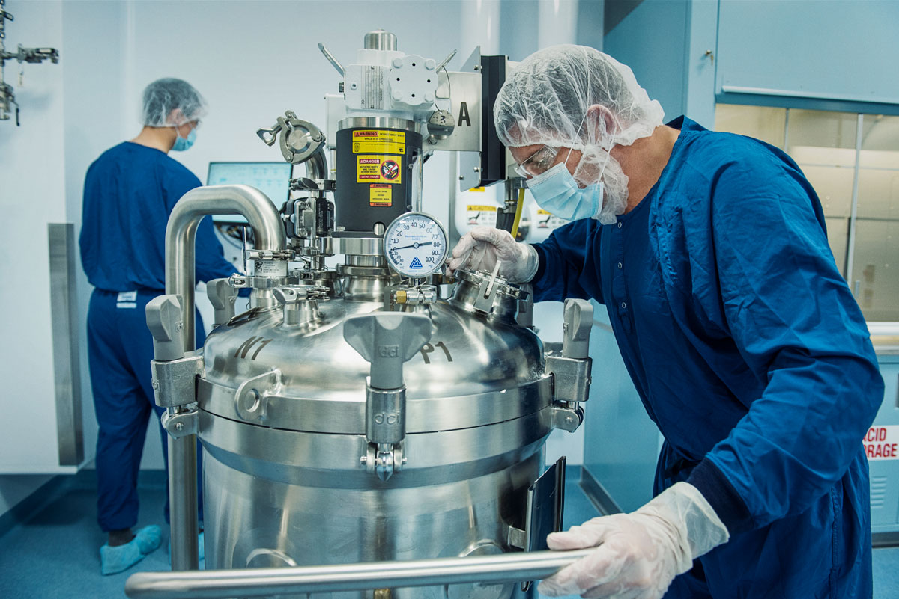

New facilities, utilities & equipment
Greenfield or brownfield programmes requiring structured commissioning, qualification and evidence planning.
A lifecycle-led approach to facility, utility, equipment and process qualification.

Engagements may begin during capital projects, equipment introduction, major change, remediation or periodic requalification. Scope is tailored to the system, risk and existing evidence.
Greenfield or brownfield programmes requiring structured commissioning, qualification and evidence planning.
Equipment, utility, process or control-system changes requiring impact assessment and proportionate requalification.
Lifecycle review using change history, deviations, performance, maintenance and calibration evidence.
Recovery of incomplete, inconsistent or weak qualification packages, traceability and outstanding discrepancies.
Qualification strategy is shaped by intended use, system criticality, lifecycle stage, change history and the evidence required to demonstrate a controlled state.
A lifecycle-led approach to facility, utility, equipment and process qualification. The focus is not protocol execution alone. We connect requirements, risks, commissioning evidence, qualification testing, discrepancies and release decisions into one traceable lifecycle.
Possible deliverables can include assessment summaries, review comments, requirement-to-evidence matrices, action trackers, draft documents, training material and readiness reports, subject to the agreed scope and client approval.
Lifecycle qualification planning and documentation across design, installation, operational and performance qualification.
Risk-based scope definition, criticality assessment and qualification strategy aligned to intended use.
Readiness review of prerequisites, turnover documentation, utilities and execution conditions before qualification.
Risk-based periodic review and requalification planning using change history, performance trends and criticality.
Qualification support for airflow, HEPA integrity, pressure, temperature/RH, recovery and cleanroom performance.
Qualification planning and evidence review for critical utilities, process gases and supporting systems.
Qualification support covering cycle parameters, mapping, load patterns, lethality or depyrogenation evidence and periodic review.
Protocol design, sensor rationale, execution review and assessment of temperature distribution and excursions.
End-to-end mapping of requirements, tests, deviations and evidence to demonstrate complete qualification coverage.
Independent protocol and report review with structured discrepancy, comment and closure tracking.
Qualification should demonstrate control through connected evidence—not isolated protocols. Our lifecycle approach links requirements, risk, commissioning, testing, deviations, release and continued verification.
Establish intended use, boundaries, interfaces, GMP impact, acceptance expectations and responsibilities.
Identify critical functions, parameters and failure modes so qualification effort is proportionate to risk.
Review specifications, design evidence, vendor documentation, commissioning status and prerequisites before qualification.
Develop, review and support execution of DQ, IQ, OQ and PQ activities using predefined, justified acceptance criteria and objective evidence.
Maintain requirement-to-evidence traceability and ensure discrepancies, deviations and open actions are assessed and closed.
Confirm qualification evidence, residual actions and documented rationale support release for intended GMP use.
Preserve the validated state through change control, calibration, maintenance, periodic review and risk-based requalification.
Deliverables are agreed according to project scope, lifecycle stage, client procedures and applicable regulatory expectations.
Clear evidence that the system is fit for intended use, critical requirements have been challenged, discrepancies are controlled and qualification decisions are traceable throughout the lifecycle.
Tell us your context and what outcome you need to achieve.
Work is scoped against applicable client procedures, regulatory requirements and guidance. Depending on the engagement, reference frameworks may include GxP, FDA 21 CFR requirements, EU GMP Annexes 1, 11 & 15, ICH Q9(R1), and ISO 9001:2015 quality-management principles.